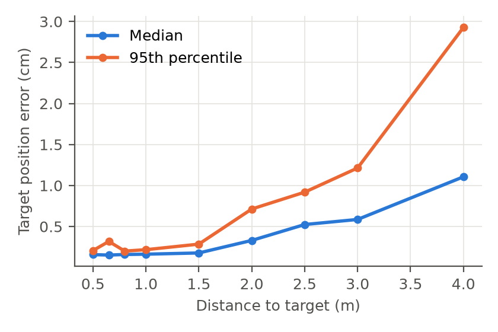
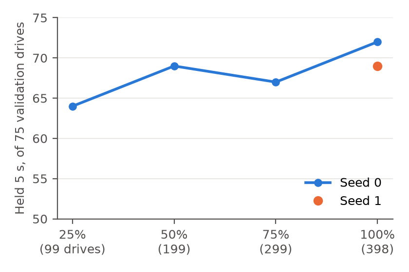
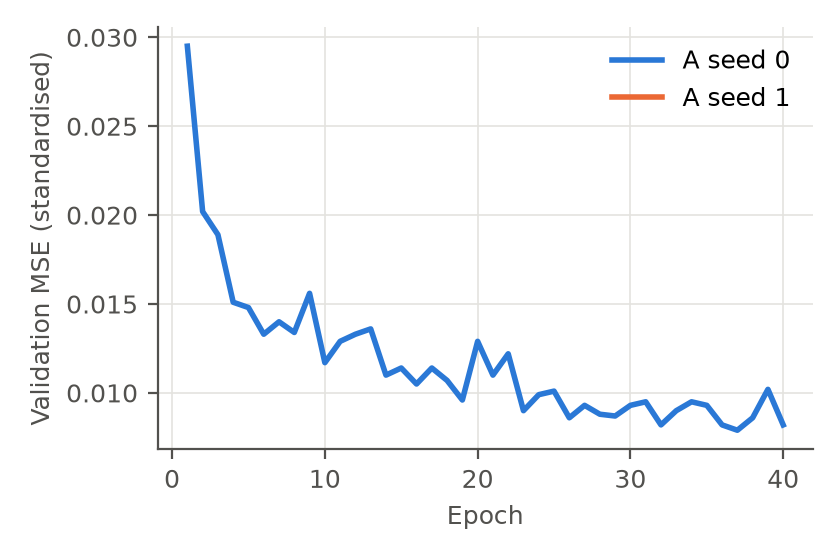

Robot autonomy results: obstacles, lidar and camera
The robot now gets around obstacles and, using a camera, reaches the target without being told its own position. The classical version of that works in 88% of test drives. The fully learned version holds the target in 49% to 61%, so the learned parts are the main gap left.
Reached means the hand came within 1 cm of the target. Held means it then stayed within 1 cm for 5 s. Scored with the simulator's true positions, which the no-true-position setups do not receive.
Main comparison
With 150 drives, a percentage is uncertain by roughly 3 to 8 points, so small gaps between rows are not real differences. The "before" tests recorded reaching only.
How the system is built
Learned parts: wheel driver and arm. The camera and filter are not machine learning. A hand-written brake sets the wheels to zero once the planner says the robot has parked.
Sensors simulated: one-plane lidar at 1 m height, wheel encoders, gyro, accelerometer (tried, not used), front depth camera, joint angles and speeds. Each is the simulator's true value plus an error model whose noise values we chose.
What the tests show
Obstacles and planning
The planner took the reach rate from 25% to 99%, with no obstacle hits. Its one failure was an arm crash in a cluttered scene.
Learned wheels
Driver A with the brake holds in 94–96% of drives with zero obstacle hits, but it follows the planner's route. Driver B, without the route, failed: 1–5% held, with 63–81 obstacle hits. Copying the teacher did not teach route-finding.
Camera
Odometry alone reached the target in 0 of 150 drives, with the hand a median of 22 cm away at its closest. Adding the camera gave 138 reached and 132 held. Base drift at parking stayed near 32 cm, but target error fell to about 0.1 cm, because the target is measured relative to the robot.
Search (target not given)
57 reached and 55 held. All 30 clear scenes worked. Gap and blocked scenes got none, because the target is hidden behind 1.6 m objects from the start and the robot spins but does not explore.
Learned parts with the camera
Each learned part costs about 25–33 reached drives compared with the classical camera setup, mostly through timeouts. Timed-out R drives often got close, with a median closest distance of 5–8 cm, but did not close the last centimetres. The arm was trained on perfect positions and receives estimates here.
The brake
A seed 0 with the expert arm rose from 128 to 144 held. With R the effect was mixed: seed 0 rose from 70 to 114 held, while seed 1 fell from 122 to 115 and its timeouts doubled.
New arm vS
Not an improvement overall: 127 held against R's 129, and more arm crashes (9 against 3). It looks better in cluttered, gap and blocked scenes and worse in clear ones. With the camera the totals match R (108 reached), with 22 of 30 held in cluttered scenes against R's 12, though 18 of 30 in clear scenes against 29.
Seeds
Training seed alone moved A + R from 81 to 134 reached without the brake, and camera + A + R from 79 to 104. Two seeds is a small sample, and these ranges should be read as approximate.
Held 5 s by scene type
Out of 30 per cell. Darker means more held. Cluttered scenes are hardest once anything is learned.
| Setup | Clear | Sparse | Cluttered | Gap | Blocked |
|---|
Camera accuracy

| Distance (m) | Seen /30 | Median (cm) | 95th pct (cm) |
|---|---|---|---|
| 0.5 | 26 | 0.16 | 0.21 |
| 0.65 | 27 | 0.15 | 0.32 |
| 0.8 | 29 | 0.16 | 0.20 |
| 1.0 | 28 | 0.16 | 0.22 |
| 1.5 | 30 | 0.18 | 0.29 |
| 2.0 | 30 | 0.33 | 0.71 |
| 2.5 | 30 | 0.52 | 0.92 |
| 3.0 | 30 | 0.59 | 1.21 |
| 4.0 | 30 | 1.11 | 2.93 |
Robot standing still, with our chosen depth noise. 320×240 image, about 111 ms per image on the CPU. Unseen placements at close range include targets outside the view or behind the arm.
Data needed by driver A


On validation scenes, driver A held in 64, 69, 67 and 72 of 75 drives with 25%, 50%, 75% and 100% of the recordings. Each smaller size has one seed, and the two full-size seeds differ by 3, so this shows only that a quarter of the data still works reasonably well.
Team benchmark, tiers 1–3
{{TIER_NOTE}} Cells show reached/held, out of 50 per tier.
| Setup | Total, of 150 | % | Tier 1 | Tier 2 | Tier 3 |
|---|
With no obstacles, the planner and driver A do about as well as the original expert, so the obstacle work has not cost clear-floor performance. R alone falls short on holding in tier 2, with 11 drives reaching the target but not holding it.
The camera cannot see high targets once parked. All 25 tier 2 scenes with targets 1.10 m or higher failed: the camera saw the target at parking in 0 of 25, and none reached it. On the other 125 scenes the same setup reached 118 and held 115 (92%). The camera sits at 1.0 m, tilted down 30°, with a 70° vertical view, so the top of its view is only 5° above horizontal. A target at 1.10 m would have to be about 1.14 m away to be in view, but the robot parks about 0.65 m or closer. The obstacle scenes have no target above 0.99 m, so the 88% result above never tests this.
All results
Frozen test scenes, 150 drives per setup. Totals and scenes show reached / held; "before" rows show reached only. The three failure columns count drives that ended that way; drives that reached the target but did not hold are not among them.
| Setup | Total | % | Clear | Sparse | Cluttered | Gap | Blocked | Timeouts | Arm crashes | Obstacle hits |
|---|
Limits on these results
- Nothing is fully independent yet. Every driver A result uses the planner's route and parked check. The camera setups are told the target once at the start, except search.
- The brake was not a clean test. The idea came from looking at crashes on the frozen test scenes, although it was confirmed on validation first. Its test gains are slightly optimistic.
- Simulated sensing is generous. We chose the noise values. The red target is the only red object, so a colour threshold works. The camera image is rendered in simulation, with no real-world lens or lighting effects, and the lidar mast is not modelled.
- Camera mount. Targets at 1.10 m or higher are out of view once parked, so all camera results apply only to lower targets. See the tier section.
- Scenes are limited. Obstacles are static, 1.6 m tall and visible to a single lidar plane. There are no pushes during the drive.
- The start pose defines the map. The robot's frame begins at its start position, and odometry drifts about 5.6% of the distance travelled.
- Tests dropped on purpose. vS seed 1 and A + vS were not run on the test scenes, because vS was no better than R on validation (64 and 59 held against 66, of 75).
- The base creeps under arm motion at up to about 0.3 cm/s, unseen by the encoders. Continued camera looks handle this, but it adds work during the reach.
What did not work
- Driver B: learning to avoid obstacles from lidar alone failed.
- Accelerometer: made odometry worse, 37.8 cm median drift against 25.6 cm for encoders and gyro. It is not used.
- Rotation-centre odometry: no better, at 29.9 cm.
- vS: training on imperfect parking did not improve the arm overall.
- Base tilt as the cause of target errors: ruled out. It was only 0.2°, about 0.3 cm.
Next
- Tilt the camera less or add a second view so high targets stay in view, then retest camera mode.
- Find why learned setups time out in camera mode, on validation scenes only.
- Train an arm on recordings made in camera mode, so it sees the estimates it receives when driving. This also gives the arm a direct use of sensor data.
- Teach or add exploration, so search can handle targets hidden at the start.
- Reduce the dependence on the planner's route, which driver B showed is the hard part.